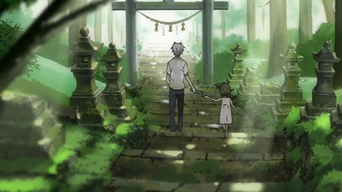

Hotarubi No Mori e
Es una película corta donde la historia se centra en solo dos personajes Hotaru y Gin. Takegawa Hotaru es una niña de seis años que viaja a un pequeño pueblo todos los veranos para visitar a sus abuelos. Un día se pierde en un bosque habitado por un espíritu de la montaña y así como por yōkais, demonios del folclore japonés. Gin le ayuda a salir del bosque advirtiéndole que no puede tocarlo o desaparecerá para siempre y Hotaru agradecida promete regresar al día siguiente con un regalo para él.
Hotaru y Gin se convierte en amigos más cercanos a medida que transcurre el tiempo y ella lo visita cada verano. Sin embargo, su relación y determinación se ponen a prueba cuando sus sentimientos cambian y el amor creciente que experimentan entra en conflicto con la única regla.
Bien dicen que en la simplicidad está la belleza y como prueba de ello está ésta película. Personalmente me hubiera gustado ver más desarrollo de ambos personajes pero estoy satisfecha de como fue evolucionando su amistad y la sensación del primer amor para Hotaru. Cuando piensas que la historia está tomando el rumbo que tu esperabas te reencuentras con los amantes trágicos y un final que te sorprenderá.